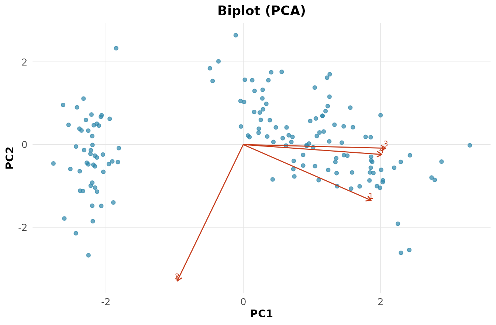

A análise multivariada estuda a estrutura conjunta de várias
variáveis — correlações, agrupamentos e direções de maior variação. É
onde a álgebra linear (autovalores, autovetores, projeções) vira
ferramenta estatística (Johnson and Wichern 2007;
Mingoti 2005). Usamos o clássico iris: quatro
medidas de 150 flores de três espécies, coletadas por Anderson e
analisadas por Fisher (1936).
X <- iris[, 1:4]
rnp_matriz_correlacao(X)$matriz
#> Sepal.Length Sepal.Width Petal.Length Petal.Width
#> Sepal.Length 1.0000 -0.1176 0.8718 0.8179
#> Sepal.Width -0.1176 1.0000 -0.4284 -0.3661
#> Petal.Length 0.8718 -0.4284 1.0000 0.9629
#> Petal.Width 0.8179 -0.3661 0.9629 1.0000As pétalas (comprimento e largura) têm correlação de — carregam informação quase redundante. É essa redundância que a PCA explora.
Componentes principais
A PCA encontra direções ortogonais que maximizam a variância. São os autovetores da matriz de covariância , e os autovalores são as variâncias ao longo delas:
rnp_pca(X)$variancia
#> # A tibble: 4 × 4
#> componente variancia percentual acumulada
#> <chr> <dbl> <dbl> <dbl>
#> 1 PC1 2.92 0.730 0.730
#> 2 PC2 0.914 0.228 0.958
#> 3 PC3 0.147 0.0367 0.995
#> 4 PC4 0.0207 0.0052 1Os dois primeiros componentes explicam 95,8% da variação ( e ): reduzimos de quatro para duas dimensões perdendo quase nada. O biplot sobrepõe observações (pontos) e variáveis (vetores):
rnp_biplot(rnp_pca(X))
Vetores na mesma direção indicam variáveis correlacionadas; o comprimento mede o peso da variável nos componentes.
Agrupamento
O k-médias particiona as observações minimizando a soma de quadrados intragrupo,
km <- rnp_kmeans(X, k = 3)
km$metricas
#> # A tibble: 1 × 5
#> wss_total between_ss ratio_ss k nobs
#> <dbl> <dbl> <dbl> <dbl> <int>
#> 1 139. 457. 0.767 3 150A razão indica que 77% da variação total está entre os grupos — uma separação boa. Para agrupamentos hierárquicos, o dendrograma mostra a sequência de fusões; o k-medoids (PAM) é uma alternativa robusta a outliers.
Validação pela silhueta
Escolher o número de grupos é delicado. A silhueta compara, para cada ponto, a dissimilaridade ao próprio grupo () e ao vizinho mais próximo ():
rnp_silhueta(X, km$clusters$cluster)$media
#> [1] 0.5062A silhueta média de 0.51 indica grupos razoavelmente coesos e separados — um critério interno, que dispensa os rótulos verdadeiros.
Classificação supervisionada: análise discriminante
Quando os rótulos são conhecidos, a LDA busca as combinações lineares que maximizam a separação entre classes relativa à variação interna (a razão de Fisher). Ao contrário da PCA, que maximiza a variância total, a LDA maximiza a separabilidade:
rnp_lda(Species ~ ., iris)$acuracia
#> [1] 0.98Com as quatro medidas, a LDA classifica as três espécies com 98% de acerto no conjunto de treino.
Testes de médias multivariadas
Para comparar o vetor de médias de dois grupos, o de Hotelling generaliza o teste :
rnp_hotelling(iris[1:50, 1:4], iris[51:100, 1:4])
#> # A tibble: 1 × 5
#> t2 estatistica_f gl1 gl2 p_valor
#> <dbl> <dbl> <int> <dbl> <dbl>
#> 1 2581. 625. 4 95 0O enorme () confirma que setosa e versicolor diferem nas médias. Para mais de dois grupos, a MANOVA estende a ANOVA (estatísticas de Wilks e Pillai):
rnp_manova(cbind(Sepal.Length, Petal.Length) ~ Species, iris)
#> # A tibble: 2 × 4
#> teste estatistica aprox_f p_valor
#> <chr> <dbl> <dbl> <dbl>
#> 1 Wilks 0.0399 293. 0
#> 2 Pillai 0.988 71.8 0O lambda de Wilks de (próximo de zero, ) indica forte separação entre as espécies. Fazer um teste multivariado, em vez de vários univariados, controla o erro tipo I global e aproveita as correlações entre as respostas.
Síntese
| Objetivo | Função | Ideia central |
|---|---|---|
| Reduzir dimensão |
rnp_pca, rnp_biplot
|
autovetores de |
| Achar grupos |
rnp_kmeans, rnp_cluster_hierarquico
|
minimizar dissimilaridade interna |
| Validar grupos | rnp_silhueta |
coesão versus separação |
| Classificar | rnp_lda |
razão de Fisher |
| Comparar médias |
rnp_hotelling, rnp_manova
|
generalizam e ANOVA |
Muitos desses métodos repousam sobre a mesma base — autovalores, autovetores e projeções —, o que ajuda a enxergar as semelhanças entre eles.